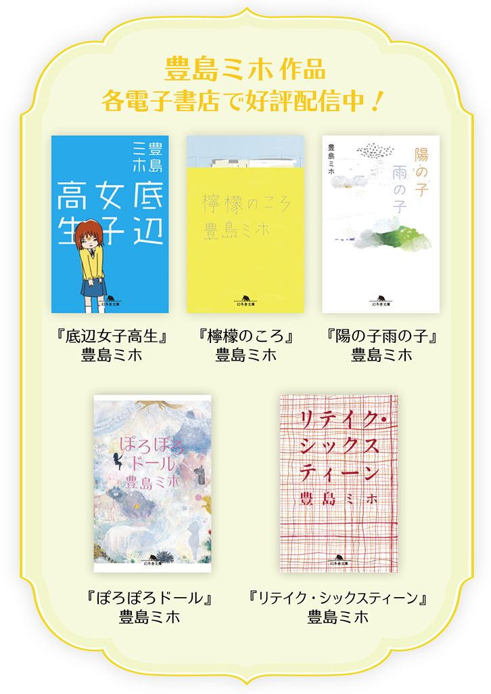

| 銀縁眼鏡と鳥の涙 | |
| 豊島ミホ | |
 幻冬舎文庫
幻冬舎文庫
銀縁眼鏡と鳥の涙
豊島ミホ
僕が写真部に入部した理由はたったひとつで、それはカメラを向けるとみんなが笑ってくれるからだった。
きっかけは多分、小学校六年の修学旅行の時、父さんが使い切りじゃないでっかいカメラを貸してくれたことだと思う。みんな、ちっこくてチープなカメラより、僕のカメラに写りたがった。もうデジカメが普及した後だったから、真新しいメタル＆スリムボディのカメラを持っている女子だっていたけれど、そういうのより、僕の胸にぶらさげられた昔ながらのカメラは人気があった。遊園地で、絶叫マシーンに乗っている泣きそうな女子にレンズを向けたら、そいつは泣きそうな顔をしたままひーんと歯を 剥 いてピースした。笑えた。
その修学旅行で調子こいてしまった僕は、なにかとアナログカメラを持ち歩き、中学に入ってもばしばし撮った。さすがに、父さんのカメラじゃ重いから（修学旅行の時だって重くてまいったけど）、日常生活では軽い使い切りカメラを使った。別にそんなことしなくたって、小さな身体にクリクリお目々を持つ僕は人気者だっただろうが、カメラを持っていると、より日々が楽しくなるような気がした。僕の周りでは、悲惨ないじめだの陰口だの、そういうものは発生しない。カメラは僕らの素敵な部分を切り取る。だから、カメラがあるところに闇は生じないのだ。
卒業式の日、みんなで祝賀会からカラオケになだれ込んだ後も、僕は周りを笑顔のクラスメイトたちで囲まれていた。十五人で十人部屋に入ったから、じゅうたんの上に座ってるやつもいて、カラフルなライトがぐるぐる回り、人の形にできた影の 凸 凹 の上を滑った。柿ピーのしょっぱいにおいが部屋に充満し、みんな歯医者の検診みたいに口を開けて笑っていた。
「鳥ちん、撮って撮ってー」
「やだー、鳥ちんこっちも！」
男も女も、 暇 なく僕の袖を引く。僕はフラッシュを 焚 いて、ばっさばっさとシャッターを切り続けた。時々、壁にもたれてフィルムを替えた。その間、みんなはカラオケで大塚愛を熱唱する女子に視線を持っていき、ただ 渋 沢 充 恵 だけがこちらを見ていた。彼女は十四人の仲間で唯一、僕と同じ高校に進学する予定の人間だった。
「 鳥 山 、カメラいじってる時の手、いろっぺえね」
カラオケが大音量で鳴る中で、渋沢充恵は僕の耳を引っぱって囁いた。
これだから、僕が写真をやめるわけがない。高校に入っても、僕はカメラによって彩られた世界を手元に取り込み続けるだろう。輝くだけの日々を、カメラが作り出してくれるのだ。
「鳥山 英 毅 です。出身は 多 野 間 中、写真部に入部した理由は、カメラを持っていると楽しいから、です」
四月の末に開かれた、新入部員歓迎会とは名ばかりの「おかしつきミーティング」で言った。 丸 椅 子 に座った先輩部員たちが、すかさず拍手をくれる。二、三年生合わせて全部で十人くらいだろうか。それに続いて、教卓の前に出したパイプ椅子に座る新入生が拍手をした。僕は両方に小さく目配せをしてから、着席する。
写真部の新入生は五人だった。高校はさすがにデカい。八クラスもあるから、五人いても同じクラスのやつがひとりもいない。でもみんなと仲良くなれそうだ、と思う。女子ふたりは 垢 抜 けててさっぱりしてるし、男子ふたりも運動部に置いて違和感のないさわやかさだ。感じいい。
全員が自己紹介を終えると、顧問である生物教師の沼倉先生が場をまとめた。
「えー......この五人が、四月入部の一年生になります。四月で五人いるというのは、うちの部にしたらすごいことだけど、まあ、二、三年生はキバんないでいつも通りやってね。本格的な指導は後回しにしましょう」
シワのついた白衣のポケットに手を突っ込んだまま喋る。先生は見た目通りに、言っていることもアバウトで、先輩たちは苦笑し、一年生はみんなちょっとぎょっとした。それをフォローするように、先生がこちらに視線を投げる。
「場に慣れるのが大事ってこと。仲良くなってからのほうが、教えたり教えられたりしやすいでしょ。まあ、自由登校の教室だと思って適当に部室来てよ」
なかなか面白い方針だ。僕は隣に座った男と、顔を見合わせてちょっと笑った。
「じゃあ、かいさーん」
沼倉先生が言う。それを聞いた僕はつい「はやっ」と口にしてしまい、部員の失笑を買った。しかし本当に「歓迎会」はそれで終わりらしく、先輩たちは適当にかたまってお喋りを始めた。先生も、二、三年でできた輪のひとつに混じってしまう。
あっけにとられた一年で、なんとなく椅子を寄せ合ってみた。「ごめ、なんだっけ名前」「あたし遠藤」「え、何組？」「あそこ、担任の先生怖くない？」などなど、ぎこちないながらも会話は始まる。
僕は話の合間に、先輩たちの輪へと視線を投げかけていた。さっきから、妙にきれいな先輩が目に入ってくる。三年のしるしである青い上履きをはいたその人は、数人の部員に混じって、静かな微笑みをたたえていた。
「......鳥山くん？」
隣の男が声をかけてくる。僕の視線の行方に気付いたらしく、「あ、あの先輩メッチャ美人よな」と小声で言った。
「つか、この部レベル高くない？ 文化部の女子とかって、もっさい感じかと思ってたんだけど、写真は違うのな」
彼のつぶやきを聞き取った女子が、さらに口をはさんだ。
「あー、それ思った。先輩たちキレイ。この部ってなんかパッとしてるよね。さすが全国行ってるだけあるよ」
「え、全国？」
思わぬ情報に僕は身を乗り出してしまう。部の成績については、なにも聞いていない。
「あれ、鳥山くん知らないの？ 市内じゃ有名だよ、 羽 田 高の写真部って」
その女子がこちらを見て解説してくれる。
「なんでも、二年前に天才が入ったっていう話で......その人が入ってから、部が」
そこでガタンと椅子の動く音がした。先輩たちの輪の中から──違う、輪と輪の間、みたいな位置から──男の先輩がひとり立ち上がったところだった。どっかの指定カバンみたいな、黒い革のカバンを持って、廊下に続くドアへ一直線に向かっていった。
「......あの人。多分」
今まで話をしていた女子が、こちらに小さく目配せをする。うそっ、と声を上げそうになって、僕はとっさに唇を噛んだ。
男はつまらないほど地味だった。短髪、眼鏡、もちろん学生服は標準仕様。ご 丁 寧 にカラーまでつけていて、お前は校則の模範イラストから出てきたのか？ という感じ。校則と関係ないであろう眼鏡すら、ただの銀縁眼鏡だった。
「その天才が入ってから、部が変わったんだって。それまではただの帰宅部だったって──お姉ちゃんが言ってた」
浜崎有也、先輩。
彼女がいっそう声をひそめてその名前を呼ぶと同時に、美人の先輩が横目でこちらを見た気がした。だからハマサキユウヤという名前は、風に乗って入ってしまった虫のように、耳の中に残る。
その「歓迎会」においては先輩たちの自己紹介がなかったので（有り得ない、と思われるかもしれないけれど、それも顧問の方針らしい）、僕は部室に通い始めても、なかなか先輩たちの名前をフルネームで知ることができなかった。
二年に「ヤマヤマ」と呼ばれている茶髪にパーマをかけた派手な男の先輩がいたけれど、果たしてどう呼んだらいいのやら、困った末に「ヤマヤマ先輩」と呼んでみた。ヤマヤマ先輩は「ん？」と普通に振り向いただけで、呼び方に関して特に反応を見せなかった。これでいいらしい。
なっちん先輩、ぺーちゃん先輩、モロ先輩、かんち先輩。二年も三年も敷居が低く、中間テストが始まる頃には、僕は部に 馴 染 んで先輩たちとお喋りをするようになっていた。他の一年の部員は、僕ほどには部室に通ってこなかったけれど、廊下で会ったら「よっ」とか「元気？」とか自然に声をかけ合える仲になっていた。
例の美人の先輩は、三日に一回くらいしか部室に来ない。そもそもこの写真部ときたら、まったく写真を撮る気配がない。みんなで集まってもダベるだけなので、部室にいる人ほど熱心、というわけでもないのだった。美女先輩が、三年男子からは「栗田」、三年女子からは「みゆ」と呼ばれていることはわかったけれど、僕はまだ声をかけることができない。
いい加減写真の話もしたいな、と思って、ある日アルバムを何冊か持っていった。中学時代に撮り 溜 めた、学校生活の写真だった。アルバムを見せると、ダベっていた先輩たちは、一様に黙り込んだ。
「ところどころ、いいカメラ使ってるね。イベントの時かな？」
長い間の後で、なっちん先輩が言った。僕が「たまに父のを借りて」と答えると、「ああ......」とうなずいたあと、また黙りこくってしまった。
それでも僕は、マズい、とは思っていなかった。自分の、楽しい時間が写った写真に自信があったから。先輩たちの沈黙も、どちらかというといいほうに受け止めていた。「浜崎有也なみの逸材が入ってきた」と誰かに言われることを期待した。
けれども、向かいに座ったヤマヤマ先輩が、僕の目を見て言った。
「スナップだよね」
「え？」
思わぬ一言だったので、返事がついていかなかった。
「いや全然、悪いとかじゃないんだけどさ！ でもコレ、写真部で撮る写真とちょっと違うっていうか......」
ヤマヤマ先輩が続けると、隣に座ったぺーちゃん先輩（女子）が「わ、言ったよヤマヤマ」とつぶやいた。茶化してはいない、どちらかというと重い口調だった。
僕は間抜けに口を開けていた。 唾 を呑み下してやっと、口を閉じたけれど、ごきゅん、という音が耳の奥で大きく鳴った。
「なにが、違うんですか」
とりあえず問いかけた。その場にいた三人の先輩たちは、互いに顔を見合わせた。
「なんだろう......スケッチと油絵の違い？」
「わかりづらいよ、それ。もっとなんか言い方があるじゃん」
「たまにいいの混じってるけど。あ、ほら、これとか。でも狙ってるんじゃなくて、ミラクルが起きてるっていうかなんていうか」
要領を得ない回答がもごもごと繰り返される。僕は恥ずかしくなってきて、机の上に散らばった数冊のポケットアルバムを片付けてしまおうとした。
そこでドアの開く音がした。
「......あれ？ なんか静かじゃない？ 今日は誰もいないのかと思った」
栗田先輩だった。彼女は長い髪をふわふわと揺らして歩いてくると、僕の斜め前の椅子に腰かけた。そのまま、テーブルの上の写真に目を落とす。
今までもじゅうぶん恥ずかしいと思っていたのに、栗田先輩に写真を覗き込まれると、さらに顔の毛穴が汗で開くような気がした。
──言われる。なにか核心をつくようなことを言われる。
そう直感した僕は、無意識に目をつぶってしまっていた。
「......あなたの？」
声をかけられて目を開けた。先輩が僕の顔をテーブル越しに覗き込んでいた。
「えっと、ゴメン、なんだっけ名前」
鳥山です、と答えた声は蚊の羽音程度にしかならず、その上になっちん先輩の声がかぶさった。
「鳥山。鳥ちんだよ。 美 夕 、まだ一年の顔全然おぼえてないっしょ」
栗田先輩は、僕に向かって「ごめんね」と顔をしかめるような笑みをつくったあと、写真の上に手を置いて言った。
「楽しそうだね。中学だよね」
「あっ──はい」
みんなは栗田先輩の言動を見守るように、静かに座っていた。先輩が、流した前髪を軽く指で寄せながら、写真のひとつを指す。
「これ。かわいい顔」
さっき別の先輩が「たまにいいの混じってるけど」と言って指したのと同じショットだった。廊下で 雑 巾 野球をしていたやつらに巻き込まれて、正面から雑巾玉をくらった女子が、「こんのー！」と怒ったところ。彼女は他の高校に行って、今はもう話すことのないクラスメイトだ。別にかわいいやつじゃないし、唇を 歪 ませて怒った顔は、決してきれいと言えるものじゃない。
でも先輩が「かわいい顔」と言うのはなにかわかる気がして、僕は素直に「はい」と言った。
「生活が撮れてる感じがするよね」
「あ、はあ......」
他のは「生活」じゃないのか？ と思いながらうなずくと、栗田先輩が言った。
「でも、他のはみんな、スナップ用の笑顔じゃない？」
電車に乗り込むと、ちょうど視線の先に、渋沢充恵が座っていた。目が合い、向こうから手を振られる。
彼女は席を詰めて隣を空け、「座んなよ」とシートを叩いた。僕はお言葉に甘えて、渋沢の隣に座る。大きな揺れがひとつあって、電車が動き出した。
渋沢充恵とは、クラスが端と端に離れてしまったので、学校では滅多に会わない。帰りの電車が一緒になることはたびたびあったけれど、お互い新しいクラスの友だちといたりして、声をかけ合うことはなかった。
「なんか、鳥山の顔見んのひさびさ」
渋沢が唇に薄く笑いを浮かべる。僕も笑って「渋沢の顔見んのひさびさ」と返す。男子は中学も高校も制服が学ランで変わらないけれど、女子はセーラーからブレザーになっているので、渋沢の姿はまだ服と顔がちぐはぐな感じがした。
「鳥山、写真部入ったってね」
「あれ？ なんで知ってんの？」
「うちのクラスの子いるでしょ。遠藤ななみ。ま、仲良いとかじゃないんだけどさ」
渋沢は中学の時から、他人よりだるそうな喋り方をするやつだったけれど、ひさしぶりに話してみると、いっそう話し方が力なかった。疲れているのかもしれない、と思う。
「デカい声で喋んだわ、また。鳥山のこと、かわいいーやばいーとか言ってるよ」
「へえ。それで君は 妬 けると」
茶々を入れてやると、渋沢は「ねーよ！ うっせバカ！」と叫んだ。ちょっと元気が出たようだ。
ちなみに遠藤ちゃんはあまり部活に来ないので、先輩たちに比べると親しくない。僕のことをそんなふうに言っているとは、考えもしなかった。
渋沢は話題を変えるように、早口に「そういえばさ」と言った。
「鳥山、最近写真撮った？ 見たいな」
僕は言葉につまり、「あー......」と無駄に声を伸ばしてしまう。
知らない人だらけの学校で、中学みたいにばしばしスナップを撮るのには抵抗があった。部活で撮って、慣れてから教室でも撮るようにしようと思っていたのだけれど、その部活がさっきのザマ。ザマ、ってほどのことではないかもしれないけれど、僕はしばらく、学校でカメラを出す勇気がない。
それを渋沢に告げてしまう気が起きず、学ランのポケットからカメラを出した。二十七枚撮りの使い切りカメラ。これはいつでも持ち歩いている。
「しーぶさわ」
と呼びかけてレンズを向けると、渋沢は、照れたようにわざとむくれた顔をした後で、ピースを突き出して笑った。
シャッターを押す。がしっ、という感触が指に残ってから思った。
──ひょっとして、笑顔になる前の渋沢をこそ撮ったほうがよかったんじゃないか？
そのひらめきに、僕は自分の肩の辺りがざわつくのを感じる。寒いような、 痒 いような、不安に似たものが胸を埋めていく。未知のものはいつだって不安を呼び起こすから。
「......鳥山？」
呼びかけられて顔を上げると、渋沢が心配そうに僕を見ていた。
「大丈夫？ なんか、疲れてるみたいだけど」
僕は慌てて宙に浮かせたままのカメラを下ろし、笑顔をつくった。
「や、そういうんじゃない。平気。渋沢のほうが疲れてるみたいに見えるぞ」
そう言うと、渋沢はひとつ伸びをして、「うーん。わかる？」とこぼした。
「高校、人多すぎだよ。中学、ちっこかったじゃん、他のクラスのやつらも顔と名前一致してさ。なんか、そういうんじゃない世界って、しんどいっていうか......」
電車は次の駅に滑り込もうとしていた。スピードを落とし、またがたがたと派手に揺れて止まる。渋沢の目に、駅のホームのこうこうとした灯りが映り込む。
「しんどい、って感じる自分が、ヌルい環境で生きてきたのかな、って思っちゃう」
渋沢の言うことが、半分くらいはわかる気がして、僕は言った。
「渋沢。今中学ン時のアルバム持ってるけど、見る？」
カバンから、さっきのポケットアルバムを取り出すと、渋沢は「思い出持ち歩いてんのかよ！」とゲラゲラ笑ったけれど、電車が動き出すと、一冊膝の上に置いて開いた。
そうして、次の駅まで、口を開かずに見入っていた。
僕はその渋沢の横顔を、カメラのファインダーから覗く。「楽しかったね」と渋沢が漏らしたその時に、シャッターを押した。
写真を批評された日から、僕は栗田先輩とも話せるようになった。他の先輩とは、写真の話が妙にしづらくなったけれど、栗田先輩には 何 故 か、話していいような気がした。
渋沢の写真が現像から上がってきた翌日、僕はその写真をファイルに入れて、昼休みに先輩の教室を訪ねた。我ながら大胆なことをしたものだと思う。一年が三年の教室に、それも特別親しいわけでもない先輩に会いに行くのだから、勇気の要ることだ。
三年の教室は静かで、入りづらかったけれど、窓際の席にひとりで座っている先輩のところまで歩いていって声をかけたら、先輩は「わ」と驚いてから「鳥くんか」と言ってくれた。
「なに？ 沼倉先生が呼んでるとか？」
自分の背中を、好奇心に満ちた視線がいくつか追いかけてくるのがわかる。先輩はやはり、クラスメイトから見ても美人なのだ。赤い上履きの一年生がやってきて、その美女に話しかけているのだから、注目するだろう。
緊張したけれど、僕は首を横に振って、ファイルを差し出した。
「これ、見て欲しくて。この間部室で先輩たちに写真見てもらった時、栗田先輩の意見に核心つかれた感じがしたから──」
です、と付け加えて言い切ると、栗田先輩は手にしていたシャーペンを置いて（自習中だったのだ、申し訳ない）、ファイルを取った。中には、大きめにプリントしたあの日の渋沢の写真が入っている。一枚目は、笑顔でピース。二枚目は、中学のアルバムから視線を上げて、僕に「楽しかったね」と言った瞬間の顔だ。
二枚目の渋沢も、笑っては、いる。口角と目尻がゆるやかに上がっている。でも髪がかぶってできた頬の影や、額にわずかに見えるくぼみに疲れがにじみ、それでいながら膝の上のアルバムを追う目の色だけがとても澄んで、まるでそこだけ消毒されたみたいで──渋沢はきれいだった。疲れているとわかるのにきれいだった。
ワンクリックでぱちんと笑顔の色に塗ったような一枚目の写真に比べ、二枚目の写真は、見ているうちに何色かわからなくなる、そのわからなさをしばらく追っていたくなる。少なくとも僕にはそう思えた。何年も見てきたはずの渋沢の顔を、現像から上がってきた写真を確認した時、僕は何分も見つめた。果たして今まで自分は渋沢の顔を「見た」ことがあったのだろうか、と思うほどに。
先輩は二枚の写真にじっと目を落としていた。それから、丁寧にファイルにしまい直して僕に差し出し、「いいね」と言った。「うん、すごくいいよ」とひとりでうなずく。
「電車の中でしょ、これ。よく撮ったね」
ファイルを受け取って、「ありがとうございます」と答えると、先輩が目を三日月形にして笑った。
「彼女？ この子」
「違います」
頬 杖 に微笑みをのせてこちらを見上げる先輩を見ながら、僕は、もう少しこの人に近付きたい、と思った。好きとか恋とかいう話ではなくて、近付いて心の動揺を見たいと思った。
梅雨に入る。特別棟の一階端に位置する、部室もとい生物実験室は、雨が続くとひどくしける。木製の椅子まで水気を含んでいる感じがして、尻が落ち着かなかった。
そんな中、栗田先輩が部室に来る頻度が跳ね上がった。週に二度くらいだったのが、三日も連続して来たりする。
先輩はみんなに挨拶をするとテーブルの隅に座り、ノートを開いた。勉強しているらしい。でも、休憩がてらなのか、三十分くらいすると、こちらへ来てお喋りに混じった。
僕たちが話すのは、 流 行 っている音楽のことや、教師の噂話、数学のうざったさなどなど、 他愛 ないことばかりだったけれど、ある時栗田先輩が、僕のすぐ隣に座って言った。その日も雨だった。
「ねえ、鳥くん。この間の写真、みんなにも見せた？」
何気ない一言だったのだろうけれど、周囲の先輩たちは一気に沸いた。「なに、この間の写真て！」「知らねーよ」「栗田先輩にだけ見せたのかよ！」と騒ぎ立てられる。
見せていない。あの写真は、僕の部屋の、学習机の一番手に取りやすい場所にファイルごと置かれている。
「あれは──見せびらかすような種類のものじゃないっていうか、なんか」
しどろもどろに言い訳をすると、先輩たちからブーイングが起きた。「俺たちがまた文句ばっか言うと思ってんのかよー」「そんなに心狭くないよー」と口々に言われる。
実際には、批評される・されないの話ではなく、純粋に「栗田先輩にだけ見せたい」という思いがあってのことだったのだけれど、だからこそ責められると恥ずかしく、肩を縮めるしかなかった。
栗田先輩が「ごめんっ、余計なこと言った！」と慌ててテーブルの上に身を乗り出す。
「あれ、大事そうな写真だったもん。秘密の写真、あってもいいよね、撮る人だったらね」
僕の代わりにみんなに弁解をする。 真面目 に弁解された先輩たちは、「秘密......」「秘密」と言い合ってから、意味深な視線を栗田先輩に向けた。
「まあ美夕はあるだろうけど......浜崎が撮った写真とか、浜崎を撮った写真とか」
なっちん先輩が口を歪めて笑う。僕はその言葉を、一瞬聞き流していた。けれども直後に、栗田先輩が耳まで赤くなって「ほっといてよ！」と言うのを聞いた途端、息が止まりそうになった。
──浜崎？
浜崎。あの、四月の歓迎会から一度も部室に姿を現していない、浜崎有也。
栗田先輩が、桃色に染まったほっぺたを傾けて、僕を横目に見た。同時に誰かが、「あ、一年にまだバレてなかったのに」とつぶやくのが聞こえた。
「あー......鳥の写真も、もしかして彼女？」
なっちん先輩が、話を 逸 らすようにわざとらしく首を 傾 げたけれど、僕はそれに、首を横に振って答えることしかできない。
浜崎は、晴れの日は彼女を撮っている。雨の日は家の暗室で現像をしている。だから降っても晴れても部室には来ない。
一方、栗田先輩は、晴れの日は浜崎に撮られる。撮ったりも、する。雨の日は部室に来る。
そういうことだった。栗田先輩が帰ってから、なっちん先輩が話してくれた。
「最近やけに美夕の顔見るな、って思ってたでしょ。 梅 雨 だからなんだよね」
電車の時間に合わせて部室を出、僕はひとりで駅までの道を歩いた。傘に当たる雨の音を聞きながら、栗田先輩と浜崎のことを、ずっと考えていた。
恋人同士で写真を撮るって、どういうことだろうか。しかもふたりは、聞くところによると、二年の学祭前から付き合っているという。学祭が十一月の頭だから、今で半年くらいだろうか。
──その天才が入ってから、部が変わったんだって。それまではただの帰宅部だったって──お姉ちゃんが言ってた。
四月に一年生の誰かが言っていたことを思い出す。こうして入ってみると、今でも「帰宅部」に近いような気はするが、先輩たちは全員、写真の見方をわかっているみたいだった。僕の写真を、適当に誉めたりしなかったのがいい証拠だ。
駅に着くと、同じクラスでサッカー部の男がちょうど改札の前にいて、「英毅！」と声をかけてきた。ひとりで帰りたい気分ではあったけれど、断れず並んで改札を通る。
「お前写真部だよな。帰り遅くね？ 全国行ってる部だとやっぱ特訓とかしてんの？」
「特訓て、なんのだよ！」
と笑いを返しながらも、浜崎の顔がちらついた。写真で全国、というのは、よく考えると、浜崎が全国大会に行っているというだけじゃないだろうか。だって、写真が団体競技なわけがない。
既にホームに入っていた電車に、ふたりで乗り込むと、前のシートに渋沢充恵が座っていた。彼女は僕と、横にいる男の姿を軽く目に入れたようだったけれど、すぐに床の上に視線を落とした。隣には誰もいない。
ミーティングを開くので写真部員は放課後全員集合するように、という放送が入ったのは、昼休みのことだった。僕は体育館の隅で、クラスのやつらと一緒にバスケットをしていたのだけれど、ちょうど入ってきたＴシャツ姿の集団の中に遠藤ちゃんがいて、声をかけられた。次が体育らしい。
「今の放送聞いた？ やっばいなー、あたしあんま部活行ってないよ。怒られるかなー」
僕は持っていたボールを仲間のほうに放って、「大丈夫だろ」と言った。言いながらも、目では渋沢を探している。遠藤ちゃんがいるなら、同じクラスである渋沢もいるはずだ。この間電車で声をかけられなかったフォロー、というわけじゃないけれど、挨拶くらいしたい。
「次、体育？」
「あっ、うん。鳥くんは体育じゃないのにバスケか。活発だー」
すぐそこにあるドアを通って、体育館の内部に散らばっていくのは、確かに一年生だった。遠藤ちゃんのことを、遠目に見てにやにやしている女子たちがいる。あれが仲間だろう。しかし、そのグループの中にも外にも、渋沢の姿はない。
「なんかひさびさに部室行くの怖いや。ね、鳥くん、放課後、部室まで付き合ってくんない？ あたし、そっちの教室まで行くからさ」
いいけど、と返事をすると、遠藤ちゃんは「じゃ、あとでね」と言って仲間のほうに走り去っていった。同時に予鈴が鳴る。
クラスのやつが、バスケットボールを床に弾ませながら近付いてきて「鳥山、モテてんなー」と言った。体育館のどこかで、きゃあっと黄色い声が上がる。
僕は隣の男が弾ませていたボールを空中で奪い取り、指で回した。ミーティングに浜崎は来るのだろうか、と思う。
遠藤ちゃんと一緒に部室に入ると、既に大半の部員が集合していた。沼倉先生も、だるそうに頬杖をついてだが、教卓についている。僕たちの姿をみとめると、「あと三人だな」とつぶやいてから姿勢を正した。
「もういいわ。始めるぞー」
よく見ると、二、三年生は全員そろっていた。栗田先輩もいる。横を通る時に、にっこりと微笑みかけてくれた。僕は軽く礼を返す。返しながら、栗田先輩の隣に座った浜崎に、意識を奪われている。ひさしぶりに見る顔──頭の中でぼやけきって、とっくになくなったんじゃないかと思ったけれど、その「校則の模範イラスト」な像は、しっかりと焼き付いていた。冷たい目が、僕を無視して教卓に投げかけられている。
遠藤ちゃんと並んで先輩たちの後ろにつくと、沼倉先生が話し出した。
「えーと、今日の連絡は秋の地区展について、です。日程が決まったので教えとくね。九月の三日と四日、場所は市の公民館の一階ラウンジ」
今は六月だ。そんなに早く知らされるものなのか、と驚いたけれど、よく考えてみると、展覧会に出す写真を選ぶのだから、二週間前に撮ればいいってもんじゃない。だいたい、僕はまだこの部活に入ってから、カメラの扱い方にしても現像の仕方にしても、なにも習っていないのだ。
僕の焦りを見て取ったように、沼倉先生がこちらに視線を走らせた。
「一年生、今から準備してもいいんだからね。先輩たちは、ギリギリまでなにもしない人もいるけど、見習わなくていいし」
ぎゃははっ、とひときわ高い笑い声で反応したのが、ヤマヤマ先輩とその周辺だった。どうも、「ギリギリまでなにもしない」タイプは彼であるらしい。
「まあ、技術は後回しにしてもね、何を撮るかは時間をかけてゆっくり考えて欲しいな。一年生も」
沼倉先生はそこまで言ってから、ヤマヤマ先輩をにらみつけて「二年生も、三年生も」と付け加えた。
「連絡は以上。かいさーん」
「やっぱ、はやっ」
僕の声にみんなが笑う。四月の時の繰り返しだったけれど、あれからずいぶん時間が 経 った気がした。遠藤ちゃんが、僕のほうへ笑顔を向ける。それから、短い間を置いて言った。
「ねえ鳥くん。これから暇？」
遠藤ちゃんの頭の向こうで、浜崎が立ち上がった。しかし今回はまっすぐドアに向かわず、教卓の前に立った。先生になにか話しかける。浜崎がなにを話しているのかは、遠藤ちゃんの声に邪魔されて聞こえない。
「今日さー、日本代表の試合あんじゃん。サッカーの。うちのクラスにハザマってやつがいてね、そいつんちが超学校のそばで。しかもでっかい液晶テレビあってさ。みんなで集まって試合見ることになってんの。鳥くんも来ない？」
僕はそれを半分聞き流しながら、栗田先輩が黙ってカバンからノートを出したのを、そして他の先輩が珍しく早々に席を立って部室を出ていくのを、見ていた。サッカー。日本代表。そんなにみんな興味あるのか。そして栗田先輩は興味がないのか。
「......ごめん、あんま好きじゃないんだ。サッカー」
僕は遠藤ちゃんに視線を戻して言った。彼女はあからさまに残念そうな顔になった。すまないな、と思う。なにしろ僕は、サッカーはどちらかと言うと好きだし。ただ、浜崎と栗田先輩より気にならないというだけで。
浜崎はまだ先生と話をしている。部室から人がはけると、声が聞こえるようになっていた。浜崎の声が小さいせいで、内容までは聞き取れないが、沼倉先生は時々教卓を叩いて笑い、浜崎も眼鏡の奥の目を細めて笑った。
──笑うのか。
「じゃあ一緒帰ろ。途中まで」
遠藤ちゃんがカバンを持って立ち上がる。僕はそれも、「ごめん」と言って断った。
「先生に、用事あるから」
思いついた言い訳をそのまま口にする。遠藤ちゃんは少し眉を寄せたけれど、すぐに口角を上げて笑顔をつくり、「残念！ じゃあお先」と軽く 踵 を返して出ていった。
ぴしゃん、とドアが閉まるのを待って、僕はそっと自分の席を立った。ノートを広げたまま、教卓のほう──浜崎のほう──を眺めている栗田先輩に、声をかける。
「先輩」
呼びかけて隣に座ると、栗田先輩ははっと目を見開いて僕を見た。まるで、今まで存在に気付いていなかったかのような反応で、僕は少しがっかりする。けれどもそれは顔に出さない。
「なにも書いてない」
先輩のノートを指して言った。栗田先輩はあきらめたように肩をすくめて笑った。
ほんとに好きなんですね、浜崎のこと。
とは口に出さない。僕は、さっき浜崎が座っていたのと逆隣の椅子で、先輩のノートをぱらぱらとめくってみた。「字、きれいすね」「先輩理系でしたっけ？ 三年ってこんな問題解けるんですか」と時々声をかけて、先輩をうなずかせる。先輩がうなずいたり首を傾げたりするたび、やわらかそうな髪が揺れ、甘苦いにおいが鼻先に届いた。
「先輩は、なに撮るんですか。今度の展覧会」
浜崎と先生の話がまだ続きそうなのを確認して、尋ねた。栗田先輩はまた小さく首を傾げる。
「うーん、多分最後だからねえ......どうしようかな」
「え？」
最後、の意味がわからず問い返すと、先輩はノートを閉じて言った。
「あ、うちの部は引退自由なんだ。九月の地区展と、十一月の学祭、どっちかでだいたい抜けるの。有也は冬の県展までいると思うけど──九月だって、他の部活より遅いくらいだしね」
有也、と先輩が呼ぶのを初めて聞いた。やっぱり「浜崎」ではないらしい。
「だから、私は最後」
栗田先輩は自分に言い聞かせるようにそう言うと、頬杖をついて僕を横目に見た。
「最後だから、『秘密の写真』出しちゃおっかな」
ふふっ、と小さな息が漏れて、先輩の唇が横に引かれる。どんな中身が詰まっているのだろう、という、ぴんと張った厚い下唇を見た瞬間、僕は自分のカバンに手を伸ばしていた。表のポケットを探る。今一番必要なものを取り出す。
がちっ。
シャッター音は、がらんどうになった教室に転がるように響いた。僕は、ファインダーの向こうで驚いた栗田先輩の顔と、それから、 弾 かれるようにこちらを振り返った浜崎の顔、両方をとらえている。
「僕は先輩を撮りたい」
カメラを顔から離して言った。栗田先輩は、おそらくフィルムに残ったものと同じ表情をしたまま、ぽかんと僕を見ていた。
「だめですか」
「だめだ」
答えたのは浜崎の声だった。その声で栗田先輩は、無情なほどに顔を赤くしてうつむいた。
教壇を下りて、浜崎が歩いてくる。沼倉先生が、愉快そうにこちらを見守っているのも見えた。
「一年。名前なに」
僕は初めて、浜崎有也に声をかけられる。「鳥山英毅」と答えると、浜崎は結局僕の名を呼びもせず、カバンを開けて黒い箱を出した。カメラのケースだった。
「今から、写真の撮り方を教える」
吐き捨てるように浜崎がつぶやく。
「それがわかれば、どうしてお前が美夕を撮るのが無駄かわかる」
──無駄？
すさまじい言い草に、僕は言葉をなくしていた。
「自らご指導とはやさしいわねー、先輩」
教卓から先生が声をかけると、浜崎はわずかに耳を赤くして「うるさいっ」と言ってから栗田先輩の肩を叩いた。その一叩きだけで、先輩がすっと立ち上がったのが、僕は少し、怖かった。
浜崎が、半端に閉まっていたカーテンを開けていく。小さいながらも重量感のあるカメラを片手に、窓際を 大 股 で歩いていき、すべてのカーテンを開けた。窓の外には、 人 気 のないテニスコートが広がっていて、梅雨の晴れ間らしく、すっきりした地面を見せている。
沼倉先生はさっさと準備室に引っ込んでしまい、部室には僕と浜崎、栗田先輩と、三人の姿しかなかった。部活では普段から空間のあまっているだだっぴろい実験室が、なおさら広く見える。
栗田先輩は、さっきから一言も口をきかず、浜崎が撮影の準備をしている間も、部室の真ん中辺りに立ってぼうっとしているだけだった。僕はその隣に立っていたけれど、浜崎にアゴで「隅に行ってろ」と指示され、教卓の前まで 退 いた。
「黙って見てろ。邪魔するなよ」
浜崎は僕のほうに一声かけると、栗田先輩の前に歩いていって、「お前も。かたまってんなよ」と言ってぽんと肘を叩いた。そしていきなり一枚。
シャッターの音、それからフィルムを巻き取る音がした後、浜崎は顔つきを変えた。変えた、のだろうか。僕はその瞬間からもう、初めて会った時の冴えない男と別の人物を、その場に見ていた。服装は似たようなもの──制服が夏服に変わっても、肩にぴったりのサイズのシャツや、もみあげの露骨な 剃 り 痕 がダサい──なのに、その男にはもう、僕がどうこう言うべき隙はなかった。
そして栗田先輩も、フィルムが巻かれる音が止まると、まるで自分の名を呼ばれたように顔を上げた。彼女はまだ少し僕の存在を気にしているらしく、膝をそわそわさせていたが、浜崎がもう一度シャッターを切ることで、嘘みたいに落ち着く。
「写真馬鹿」
と、目を細めて言った。その声に、浜崎はカメラを構えたままかすかに笑う。カメラのボディに、顔の右半分が隠れているというのに、浜崎の笑いはあからさまに表れた。いやらしく歪められた唇と、その間にのぞく端正な歯が、強いコントラストを生み出す。
僕は息を呑んだ。ほぼ同時に、教室に響くシャッター音を聞く。
──これか。
浜崎が発するシャッター音は、被写体に呼びかけていた。少なくとも僕にはそう聞こえた。あれは浜崎の、声。
震えそうな指をポケットに押し込んで、僕は浜崎を見た。ゆっくりと歩き始めた栗田先輩ではなく、撮っている浜崎の顔を、ひたすらに見つめた。
カメラに半分隠れた彼の表情はめまぐるしく変わり、レンズの向こうに語り続ける。僕はその語りかけを遠目に見ながら、自分に尋ねる。僕はどんな顔をみんなに向けて撮ってきた？
──みんな、スナップ用の笑顔じゃない？
軽く諭すように言った栗田先輩の声が 蘇 り、僕はどっと汗をかいた。
その間、浜崎の放つシャッター音の頻度は加速度的に高まっていき、それにつられて栗田先輩の動きも大きくなっていった。実験室の黒い机の上に伏す。机に広がった髪を一束、持ち上げてレンズを見る。視線を逸らす。ゆっくりと身体を起こして立ち上がる。
テニスコートの地面が巨大なレフ板のはたらきをし、教室は照明に照らされた水槽の中みたいに明るかった。浜崎と栗田先輩は追いかけっこをして泳ぎ回る巨大な魚、そして僕は水槽の底で息を殺しているタニシだ。浜崎が追いかけることで、栗田先輩の動きはより自由になる。跳ね回る動線が見えた。彼女の、心の。僕はそれに、一触れもすることができない。
比 喩 でなく息が詰まってきて、僕は時々、意識して深呼吸をしなければならなかった。浜崎も、フィルムが切れると椅子に座ってひと息ついた。
フィルムを替える浜崎の向かいに、栗田先輩が座って言った。
「有也の、フィルム替えてっとこ、なんかやらしい」
「はあ？」
栗田先輩は酔っぱらったような声でうふふふ、と笑ってから、あっと声を上げて僕を見た。
それから小さく、「ごめん！」と言ったのだった。
翌週、昼休みの教室で突然声をかけられた。
「おい、英毅。三年の先輩が呼んでる」
戸口に立ったクラスメイトに言われて、廊下に顔を出すと、そこに立っていたのは、栗田先輩ではなく、浜崎だった。腕組みをして、銀縁眼鏡の奥からこちらをにらんでいる。並んで立つと、浜崎のほうがわずかながら背が低かった。
浜崎はむっつりした顔のまま、僕の前にクリアファイルを突き出した。
「プリントしたから。こないだの。やるよ」
僕は慌てて、それを受け取って抱え込んだ。乳白色のファイルの下に、栗田先輩の横顔が透けていたからだ。浜崎は僕の動作を見ると苦笑いをして、「エロ本渡してるわけじゃないんだからさー」と言った。
そのまま、用が済んだとばかりに背を向けて歩き出す。焦りながらも「あ、ありがとうございますっ」と言うと、浜崎は振り返った。
「別に、お前のこと気にかけてるとかじゃないから。沼倉が、今年の一年で残りそうなのはお前だって言ってたから」
それを聞いた途端、ふにゃふにゃと力が抜けそうになった。が、なんとか教室の隅まで戻っていって、カーテンの陰に隠れた。ファイルから写真を引き出す。
写真はモノクロで、二枚あった。一枚目は、こちらを拒むように顔を背けた栗田先輩。かなり寄った写真で、長い髪の間に、横にねじった首の筋肉のこわばりがはっきりと写る。首を中心に据えて撮られた写真は、先輩の冷淡な表情と相まって、ひどく 卑 猥 だった。そして二枚目は、実験室の真ん中を軽やかに歩く先輩の背中を、ロングショットで写したもの。顔はほとんど見えないのに、斜め後ろからのぞく頬の形から、栗田先輩が満面の笑みを隠しているのがわかる。
僕は、昨日現像から返ってきたばかりの自分の写真を思い出し、目の下に涙を溜めていた。僕が撮った栗田先輩は、正面からただぽかんとした顔を見せているだけで、実物よりずっと美しくなかった。幼い子どもが描いた母親の絵のように、記号でできているようにすら見えた。しかし浜崎の写真に写った先輩は生きている。五十年後も百年後もこの先輩のままで生きていることが、はっきりと予感できる。
教室の 喧 噪 が遠くなる。僕は写真の中に入ろうと、目だけでしきりにもがいていた。
僕は翌日、地元の駅で渋沢を待ち伏せる。渋沢は、朝は僕より遅い電車に乗るらしく、遭遇したことがなかった。
七時五十五分、学校に着くのにぎりぎりの電車に、さらにぎりぎりの時間に、渋沢はホームに駆け込んできた。既に電車は入線している。ドアが開くのと、ホームのベンチから立ち上がった僕に彼女が気付くのとが、ほぼ同時だった。
渋沢は息を切らしながら、黙って電車に乗った。僕もそれに続く。小さな駅なので、電車はすぐに動き出す。
彼女は激しく肩を上下させていたけれど、ごくん、と唾を呑む音を立ててから、荒い息混じりに喋り出した。
「どしたの鳥山。あんたいっつも、もっと早い電車乗るじゃん」
登校には遅い電車なので、乗客は少ない。田舎であるからして、大人はもれなくマイカー通勤なのだ。僕たちは向かい合わせでボックスシートに座った。
「お前に用事あって」
カバンを膝の上に置いて告げる。向かいの渋沢が、「なんだろ」と胸を押さえて言った。
「これ。前撮った写真」
カバンから、写真の入ったファイルを出して渡す。渋沢は「え」とつぶやいて、「あれさー、鳥山いきなり撮るんだもん、絶対へんな顔してたしもー」とまくしたてつつファイルを受け取った。プリントを取り出す。一枚だけ。アルバムを手にしたほうのショットだ。
渋沢の顔にはりついていた照れ笑いがすっと消える。彼女が黙り込んだ数秒間、電車の音がやけに大きく聞こえた。
「......これ」
渋沢は僕から目を逸らすように、窓を見た。早口に、「なんでだろ」と言う。
「なんか、この写真恥ずかしいよ」
窓に向けた彼女の横顔が、うっすらと桃色に染まっていた。その輪郭の後ろを、車窓の緑が流れて、僕は心の中でシャッターを切る。
「美人に撮れすぎてるから恥ずかしいんじゃねえの」
そう言ってやると、思い切り足を踏まれた。
「いって、おま、本気で......」
痛がる僕を見て、渋沢はけたけたと笑い声を上げると、ふと真顔になって言った。
「ね、鳥山」
「うん？」
「私、今日学校行きたくないや」
車輪が規則的に音を刻む。僕は黙って渋沢を見守っている。
「一緒にサボんない？ このまま」
渋沢が、写真の中と同じ淋しい笑みを浮かべて──口元のほくろがちょっと上に動いて──僕はうなずく。片腕を窓枠に引っかける。
「撮らしてくれんなら、いいよ」
「......マジで？」
渋沢は迷うようにうーんと声を上げているけれど、結局うんと言うと思う。外は明るいけれど西のほうが曇り気味で、これから写真が撮れるかどうかはわからない。でももし晴れ続けたら、地区展に出す写真が撮れると思う。今日はそのつもりで、重いほうのカメラを持ってきている。そして、渋沢に語りかけたいこともたくさんある。見たい渋沢が、いる。
電車の揺れに身をまかせながら、僕はこの時間のすべてを拾おうとしていた。話し声ひとつしない電車に、次の停車駅を告げるアナウンスが流れる。ひとつ向こうの席で別の学校の制服を着た男子が窓にもたれて居眠りをしている。スピードを落とした電車が、ビニールハウスだらけのさくらんぼ畑をくぐり抜けていく。
自分はカメラによって彩られた世界を取り込んでいるのだ、と考えていた頃のことが遠く思い出された。カメラが世界を彩るんじゃない。世界には最初から色があって、僕はそれを、この黒い箱を通して自分の手に落とし込もうと苦心するだけだ。
「海まで行こう」
渋沢の声を聞いたのと、栗田先輩も浜崎が撮ったものを見て泣いたろうか、と思いつくのが同時だった。電車はゆっくりとスピードを落とし、緑に囲まれた無人のホームに止まる。
豊島ミホ
１９８２年秋田県生まれ。早稲田大学卒業。２００２年「青空チェリー」で第１回「女による女のためのＲ‐18 文学賞」受賞。著書に『檸檬のころ』『ぽろぽろドール』『リテイク・シックスティーン』などがある。

銀 縁 眼鏡 と 鳥 の 涙

平成25 年10 月発行
著 者 豊 島 ミホ
発行者 見城 徹
発行所 株式会社幻冬舎
〒１５１｜ ００５１
東京都渋谷区千駄ヶ谷４｜ ９｜ ７
カバーイラスト・デザイン 豊島ミホ
幻冬舎ホームページ
この電子書籍に関するご意見・ご感想をメールでお寄せいただく場合は、 comment@gentosha.co.jp へ。
© MIHO TOSHIMA, GENTOSHA 2013
● 株式会社幻冬舎『恋のかけら』（幻冬舎文庫）収録の「銀縁眼鏡と鳥の涙」に基づいて制作されました。
∧ 禁止事項∨
１．本電子書籍のデータを第三者に譲渡、あるいは公衆送信すること。
２．法律で認められている範囲をこえて、本電子書籍の全部あるいは一部を、弊社の許可なく複製、転載すること。